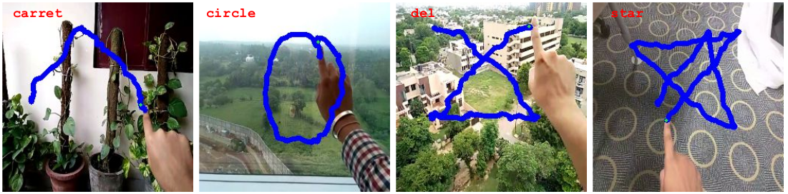
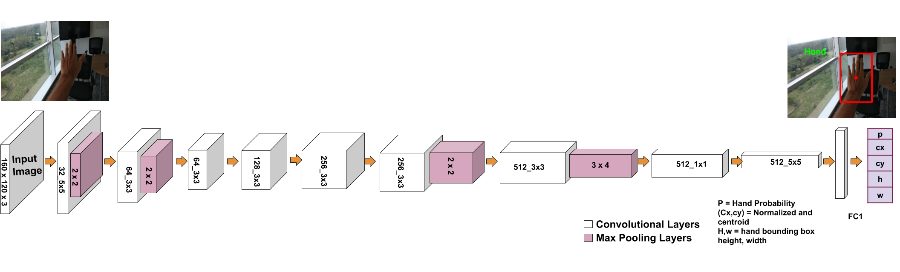
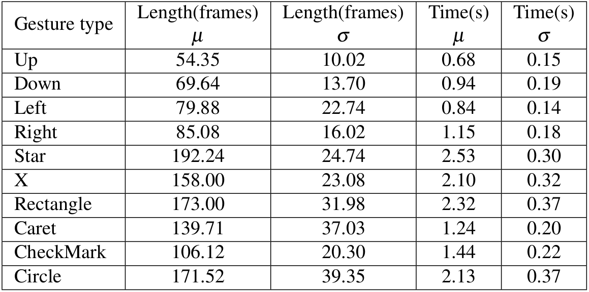
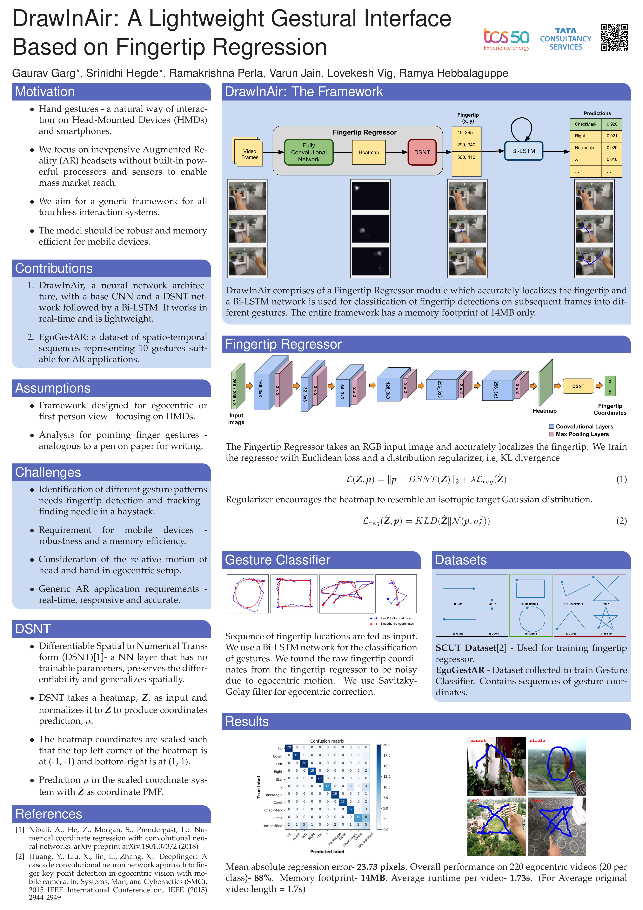

Abstract
Hand gestures are utilised extensively on egocentric vision systems, in robotics, Augmented and Virtual Reality systems, amongst others. Accurate hand detection is typically a first step for the applications mentioned before and can be achieved through the state-of-the-art deep learning models such as YOLOv2, MobileNetv2 and Faster RCNN Often, such models come with overhead of either computational load or failure to achieve real-time performance in a resource constrained environment. To this end, we propose a light weight hand detection module that also achieves state-of-the-art performance in First Person View(FPV) using RGB data only. Our network, termed, EgoHandNet is a hand detection module inspired by Tiny YOLO[] preserving the global context for accurate localisation of hands in FPV. Our contributions to hand detection are: low model size (73MB) can be easily ported on phone with highest precision among the existing models such as TinyYOLO, YOLOv2, FRCNN and also MobileNetV2 99.88% on SCUT dataset. This is mainly because our novel loss function used for training the network and for specific purpose of detecting hand in FPV. Our model is trained on a GPU machine and is ported on to an android device to be used with frugal Augmented Reality headsets in the likes of Google Cardboard and VR Box.

Key Contribution
- We propose EgoHandNet , a light weight convolutional neural network architecture, consisting of a CNN for efficient hand Detection in First person view gestural interaction with HMD.
- EgoHandNet works in real-time and can be ported on mobile devices due to low memory footprint.
- Loss function : To fit the box perfectly.
The Idea

In this work, we present a neural network architecture comprising of a base CNN and a differentiable spatial to numerical transform (DSNT) layer followed by a Bidirectional Long Short-Term Memory(Bi-LSTM). The DSNT layer transforms the heatmap from CNN, that is rich in spatial information, to output spatial location of fingertip. The details of the CNN+DSNT network is mentioned in the figure below. The Bi-LSTM effectively captures the dynamic motion of user gesture that aids in classification.

Figure above shows the overview of our proposed fingertip regressor architecture for fingertip localization. The input to the network is 3x256x256 sized RGB images. The network consists of 6 convolutional blocks, each with different convolutional layers followed by a max-pooling layer. Then we have a convolutional layer to output a heatmap which is input to DSNT. Finally, we get 2 coordinates denoting fingertip spatial location.
EgoGestAR Dataset

We collected the data from 50 subjects in our research lab with ages in the range 21 to 50 with average age 27.8 years. The dataset consists of 2500 gesture patterns where each subject recorded 5 samples of each gesture. The gestures were recorded by mounting a 10.1 inch display HP Pro Tablet to a wall. The gesture pattern drawn by a user's index finger on a touch interface application with position sensing region was stored. The data was captured at a resolution of 640 x 480. Figure above describes the standard input sequences shown to the users before data collection and a sample subset of gestures from the dataset showing the variability introduced by the subjects. Statistics of the EgoGestAR dataset is shown below. The dataset is available here.

Demo Video
Poster
